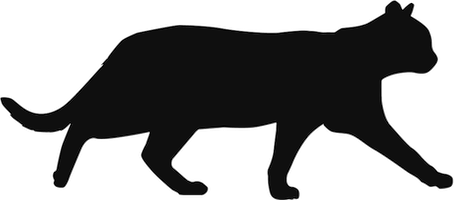

IN MEMORIAM:
Meeka the Cat
Felis catus amatus

Home
Contact
Links
Pictures
Links
All about feline kidney disease
Research on human kidneys can help us treat kdiney problems in cats
Wikipedia entry about cats
An excellent children's book series about a house cat who joins a band of feral cats
Scientific American article about the evolution of the housecat from wild cats